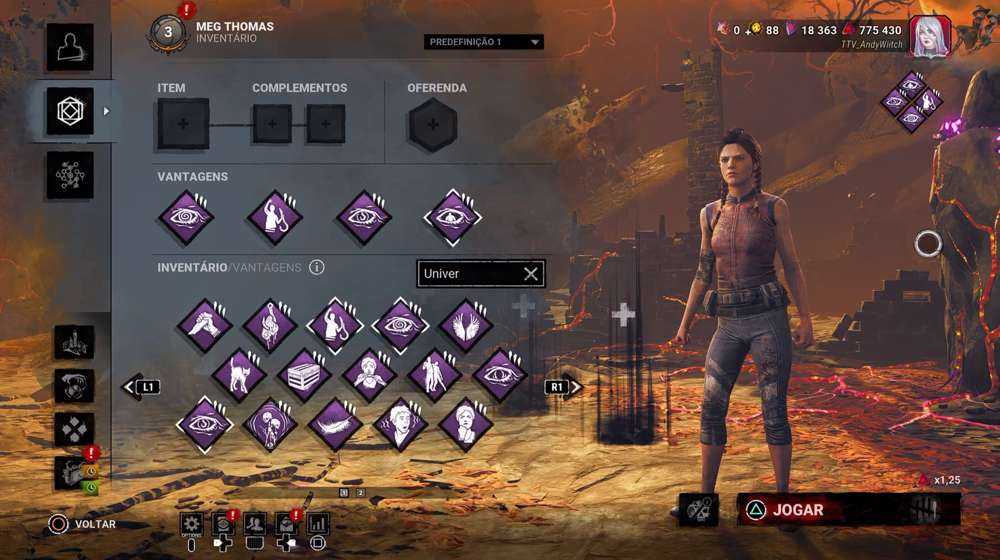

Primeiros Passos na Névoa
Uma build acessível para quem está começando: encontre geradores, obtenha informações e ajude seus aliados.

Clique no ícone ou no nome de cada vantagem para abrir um exemplo real de uso, uma dica e um erro a evitar.
Enquanto você estiver no gancho, ajuda a revelar a posição de sobreviventes próximos ao gancho para os outros jogadores, conforme as condições da vantagem. Facilita a coordenação do resgate.
Ao concluir um gerador, permite visualizar a aura do assassino conforme as condições da vantagem. Use a informação para decidir se deve se esconder, fugir ou continuar reparando.
Depois de resgatar alguém do gancho, aumenta sua velocidade de cura de outros sobreviventes por um período. Procure um local seguro antes de curar.
Revela três geradores próximos entre si e oferece bônus de reparação neles. É ótima para aprender a priorizar objetivos e evitar deixar três geradores difíceis para o final.
Como jogar com esta build
- Comece por Déjà Vu: procure os geradores destacados e priorize os mais importantes.
- Observe Sentido Obscuro: após a conclusão de um gerador, aproveite a informação sobre o assassino.
- Resgate com segurança: use Conseguiremos para curar aliados depois do resgate quando a área estiver segura.
- Se for pendurado: Parentesco ajuda sua equipe a coordenar o salvamento.